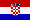

Telegrafiklubben i Kroatien:
Kolla ovanstående web-sida om du kan läsa 9A-språket.
Du kommer att hitta
allmän information,
regler för W-9ACWG-M diploment, och
en medlemslista.
Tillgänglig e-mail adress:...9a3pa (at) 9a0tcp.ampr.org...
Sekreterare:
MATO SAMARDZIC, 9A3SM
JURE KASTELANA 20
HR-10000 ZAGREB, Kroatien